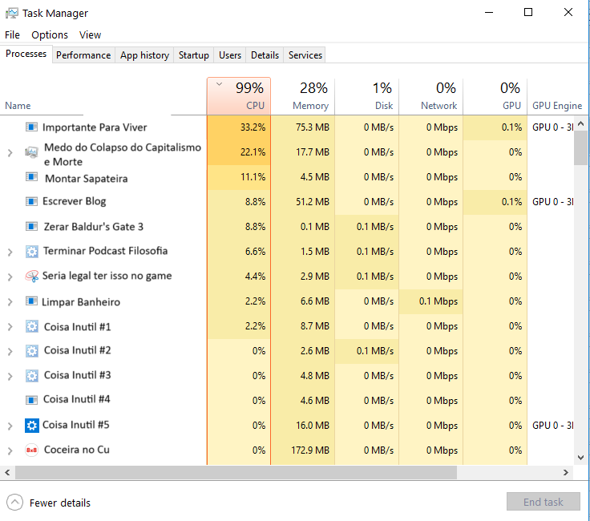
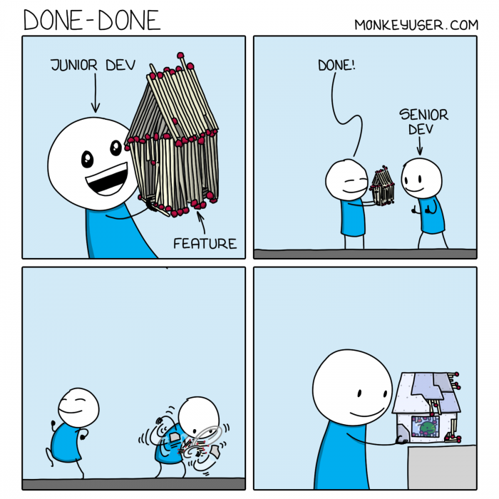
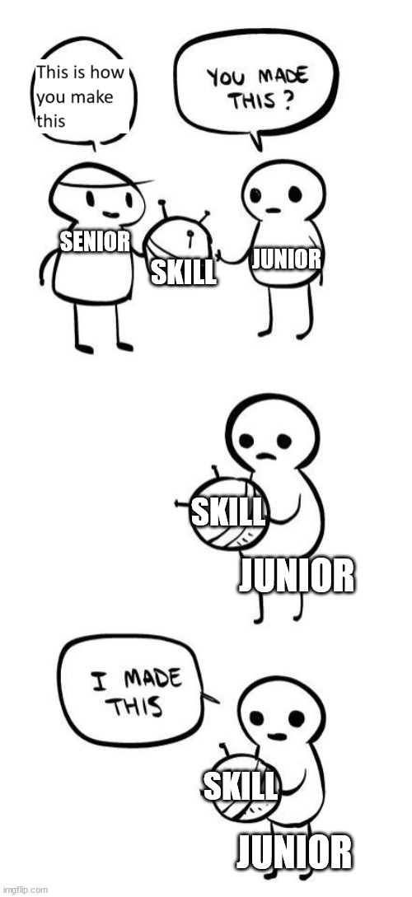

É engraçado como frameworks são poderosos[1]. Desde minha primeira interação com aprendizado de maquina, na minha iniciação cientifica no segundo semestre da minha universidade, quando eu mal sabia programar qualquer coisa em C[2], li um livro sobre Computação Bio-Inspirada e aprendi sobre Redes Neurais. Na época nem tava na moda, e só sabia disso como "uma coisa legal para filtrar sinais de uma toca com neuro transmissores para controlar um carrinho de controle remoto com a mente"[3]. Mas já comecei a usar isso como frawork para representar minha mente.
Depois que li (ouvi) o livro Algorithms to Live By esse framework ficou muito mais claro. Ele juntava muito conhecimento implicito que tinha de Ciência da Computação que aprendi na "raça"[4] no estágio e primeiro CLT e na terapia[5]. Acho que é um bom framework de como meu cérebro está nos ultimos dias e por que estou escrevendo esse texto.
Meu antigo notebook (RIP) - tinha um bug insuportável que deixava a CPU dele sempre em 100% e acho que meu cérebro tem esse bug. O problema é que eu não posso comprar um novo cérebro, só posso dar manutenção nele. E hoje meu cérebro ta meio assim:

Meditar, caminhar, viver uma vida saudável ajudam a limpar essas tarefas. Mas nada é tão eficiente quanto escrever. Pricipalmente quando eu sinto que preciso e quero colocar no papel (e completar minha meta de um texto por mês[6]). Então aqui vai.
To numa brisa de fazer coisas. Viver melhor. Construir coisas que durem. To meio cansado de começar mil coisas e não terminar nada. Saca? Quero que daqui uns anos eu abra meu Jardim Digital e possa ver fotos, memórias, textos. Algo sei la, lindo da minha vida. Talvez seja o medo de morrer. Esse medo tem sido muito grande ultimamente. Chorei algumas vezes. Mas tá bem. A vida é meio isso. E na real, por mais deprimido que eu esteja e serei - não tem como não carregar isso comigo - eu amo minha vida como ela é e como ela está caminhando[7]. Mas quero falar sobre medo mesmo assim.
Eu acho que tinha comentado com Benes - e talvez com vocês numa nota de rodapé num ultimo texto - mas Kendrick tem uma musica muito boa sobre medo.
E conversando com Benes, fui relembrado de uma ótima verdade de que tomamos decisões (AKA vivemos) por medo ou por amor. Queria muito entender o meu medo. O porque eu to com medo paralisante. E, eu sei, eu sei. Eu já me apoiei insanamente no que Benes me disse sobre esse meu medo. Eu me sinto seguro. Se eu for demitido, vai ta tudo bem, sabe? Vamos dar um jeito. Eu vou arranjar um emprego, vai ficar tudo bem. Não é o fim do mundo.
Mas... Se não é o fim do mundo por que parece o fim do mundo? Por que parece que eu vou morrer? Por que que eu me saboto de um jeito tão tão destrutivo? Eu provavelmente não vou ser demitido por que eu não respondi um e-mail de uma maneira tão rápida. Não parece prioridade e to só ajudando um cara de outro time. Mas será que era melhor eu ter ficado na minha? Mas e agora, já passou um dia, ja passaram 3. 5. E agora?
Por mais que eu queira tanto entender por que eu deixo esses problemas acumularem e explodirem na minha cara, acho que o mais importante é resolver o sintoma que me paraliza e deixa doente. Melhor ter uma boia no meio do oceano do que tentar nadar pra praia sem ajuda e direção. Então, infelizmente, preciso botar pra fora. Mas eu tenho medo de me expressar para pessoas - especialmente meus amigos do trabalho, mesmo eles tendo mais contexto - sobre meus problemas de psychological safety. Sempre que faço, eu me sinto cavando mais minha cova, sabe? Eu sinto que falar para Benes e meu Pai, por mais dificil que seja pela vergonha, medo de ser abandonado e outras coisas que SEI que sou eu fazendo tempestade em copo d'agua[8] é importante. Ajuda a dar forma. Mas não quero sobrecarregar ela e ficar apenas no nível superficial de insights[9]. Quero agir e coisas no papel[10] são menos assustadoras do que na mente.
Eu acho engraçado como a gente não é muito especial e como isso tende a ser bem especial (tenho amigos passando por coisas muito semelhantes). Infelizmente, não podemos comprar um novo SSD para nossa mente. Não podemos mudar de país e achar que os bugs vão ser corrigidos. Talvez a gente consiga minimizar eles, trabalhar neles de outra forma, mas se a gente não ajustar a nossa build[11] uma hora ou outra esse ponto fraco vai ser explorado e vai ser difícil defender esse ataque. Reconstruir vai ser dolorido. Talvez até mais do que antes. Vai parecer que estamos regredindo e não progredindo. Sorte a nossa que temos amigos com estratégias diferentes, estilos diferentes de lidar com a vida passando pela mesma coisa. É sempre um prazer - por mais que seja muito triste saber que eles estão sofrendo também - que estamos sofrendo isso juntos, sabe? Foi uma delicia conversar com essas pessoas e ver nosso crescimento[12] e se fortalecer um no outro.
Voltando para meu medo atual de morte, fim do mundo, colapso do sistema capitalista e tudo mais: eu sinto DE VERDADE que eu preciso ouvir meu corpo. Não acho que to fazendo birra e talvez eu precise de ajustes mais intensos. Mas puta merda, eu não sei fazer isso de um jeito saudável. Pelo menos não agora. Talvez a BigCorpTechIncorporated seja saudável [13] - e nossa, como eu quero que seja! [14] - mas eu preciso dar uma ajustada na minha build.
Eu definitivamente não quero sabotar toda minha carreira. Não quero sabotar minha vida. Viver é bom, e não corro risco de vida, clan, ta safe [15] mas por que caralhos é tudo tão dificil? Acho que é porque que eu me sinto num cassino onde a unica coisa impedindo o fim do mundo são outras pessoas num sistema falho. Tipo, por que caralhos um degenerado do r/wallstreetbets pode levantar bilhões de dolares como o Bill Hwang fez com a Archegos em 2021. Que por algum motivo, a Bloomberg usou esse desastre como um ÓTIMO SINAL PARA O SISTEMA CAPITALISTA [16] é uma palhaçada insana. Me da real ansiedade e depressão.
No fim, acho que to absorvendo muito problema de uma vez só. Acho que parte da minha ansiedade vem daí. Mas parte de mim não deixa de ficar puto com esse sistema. De qualquer maneira, não quero ser um Bill Hwang e nem ser um cara que trabalha em IB. Mas só quero uma vida de boa, numa empresa que eu possa trampar e ficar lá pro resto da vida. Talvez a BigCorpTechIncorporated seja isso, talvez não em consultoria mas definitivamente não em trabalhos que eu me sinto desmotivado e burnoutado (que pode só ser um reflexo do meu burnout pré-pandemia quando eu trabalhei no pior projeto da historia e isso criou o ciclo de sofrimento que ainda não consegui me recuperar direito)
Acho que a boa noticia é que eu to conseguindo encontrar meu flow de novo. Por mais que eu ainda sofra para terminar o jogo novo que comprei, ou para fazer meus projetos. Eu to conseguindo sentar por algumas horas e fazer coisas em flow state. Algo que fazia muito tempo que não sentia. Super conectado comigo mesmo de um jeito feliz e não vomitando informação chorando compulsivamente. Produtivo via amor e não medo. Espero que eu consiga me exercitar nisso e que minha build[17] evolua e volte para os dias que conseguia fazer game jams para aprender javascript em dois dias e isso ser legal e não cansativo. Que eu continue podendo aproveitar o por do sol com Benes como consigo agora e não conseguia direito meses atrás.
Onward, Forward.[18] Só temos essa direção, time
[1] - Sei lá, consultoria me fez aprender a pensar assim. voltar
[2] - Eu sabia me virar, mas como era uma matéria da engenharia de produção, quando eu cavei uma entrevista na Apple, eu lembro de passar vergonha com um "algoritmo de jardim de infância" - palavras do meu professor corrigindo meu TextRPG que tinha que fazer para o trabalho da matéria de OOP no intercambio - para ordenar os dados de controle de qualidade para medir problemas na fabricação de iPhones. Eu me senti tão envergonhado que comecei a estudar muito mais analytics e meio que cá estou hoje. voltar
[3] - Sinto falta da época que eu fazia "Ciência" e as coisas pareciam mais mágica e menos "capitalismo extraindo valor de coisas tecnologicas" era mais "arte pela arte" e menos "como fazer isso ser aplicável". (E eu lembro de amolar para caralho meu orientador (eu deveria mandar mensagem para ele) sobre aplicabilidade e menos sobre ciência). voltar
[4] - Obrigado aos meus orientadores e ao meu primeiro chefe, me ensinaram MUITA coisa. Devia mandar msg para ele também   voltar
[5] - Amo muito como Benes e eu somos o oposto de exploration e exploitation como o Chomka e Jorgin. voltar
[6] - Junto com os rascunhos em outras páginas. voltar
[7] - Eu amo real minha familia/squad que tenho para vida ❤️ voltar
[8] - Agradeço por hoje em dia serem apenas garoas e não destruirem completamente meu funcionamento como individuo e vontade de viver. Obrigado gabi por aturar minhas garoas e tempestades, metaforicamente por dias que estou mais pra baixo, ou por dias que o clima te deixa tão para baixo. Obrigado por tankar essa comigo esse ano. Sou grato pelas pessoas que também me entendem e passam por algo semelhante e sei que posso conversar quando preciso voltar
[9] - Item 10 do ótimo post de Benes voltar
[10] - Ou na tela do meu Jardim Digital. voltar
[11] - Conceito gamer de estratégia para vencer uma partida (aceito definições melhores, se você é linguista e quiser, abre um PR que eu atualizo aqui ou linko para seu texto) voltar
[12] - Repito: eu amo real minha familia/squad que tenho para vida ❤️ voltar
[13] - To tentando ser mais anonimo, mas enfim, da pra saber do que to falando voltar
[14] - Lembro de outro data point que conversei com Benes, que meu pai me faz lembrar quando eu me esqueço: Cielo. Foi foda meu 1 ano "de boa" na Cielo. Eu não tinha medo de não entregar. Tinha medo de não ser promovido e ter uma carreira ruim, talvez eu de fato crie problema. O BCG foi um dos poucos lugares que tankei problema e ainda consegui querer ficar lá. It might mean something. The people, the challenge? idk? voltar
[15] - Meu complicated habit agora é menos destrutivo, tipo conversar as 4:30 da manhã (numa sexta pelo menos. Com um amigo meu mas eu ainda consigo ser um ótimo marido para Benes amanhã e um ser humano mais feliz para mim) e eu li em algum lugar que usar muito foot note ou parentesis é um ADHD trait. Se é ou não, a internet ta de parabéns por me fazer acreditar nisso (por que eu clinicamente me testei para essa merda. Output: Deprimido hahahahah) voltar
[16] - o fato de que a Bloomberg disse que isso era um bom sinal para o sistema, que o Credit Suisse (RIP) que mais se fodeu não impactou o sistema mas 2 anos depois o BANCO FUKCING QUEBROU E ALGUEM SE FODEU NESSA HISTORIA (Tipo, o valor da acao desses caras EVAPOROU em 2008. Preciso ver onde colocar meu dinheiro, pqp.) E a gente continua como se nada tivesse rolado. Tipo, mano, wtf. Eu tenho certeza que um bug do milenio real pode acontecer. Fucking brittle financial markets/society. Also, deve ser um feature, not a bug com livros como: Permanent Crisis: The Financial Oligarchy's Seizing of Power and the Failure of Democracy. De um Professor de Matematica Financeira da universidade de Zurich. Fucking USP da suiça. A gente mora numa simulacao com Elon sendo nosso Meme Overlord voltar
[18] - e do meu squad voltar
[18] - Amo muito Ted Lasso, pqp. Me identifico demais com Ted. E o Ted parece meio meu Pai também. Enfim voltar